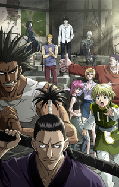
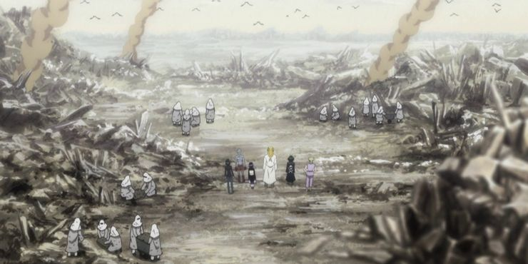
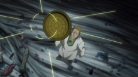
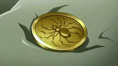
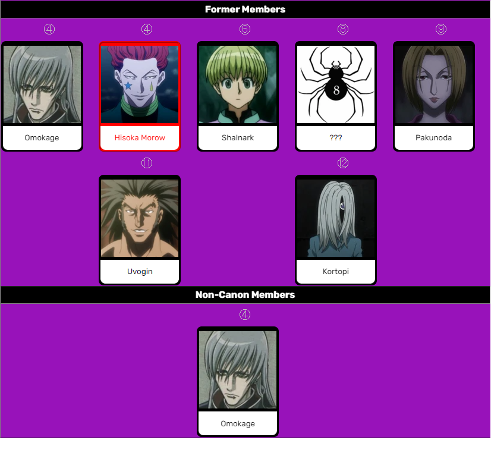
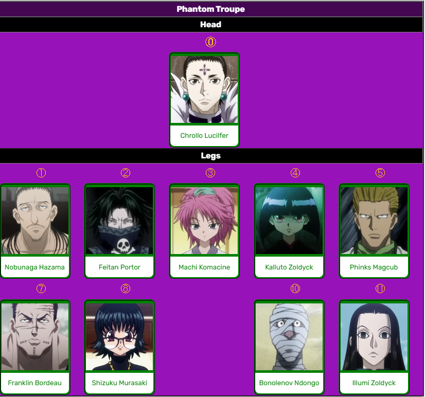

Overview

Phantom Troupe (幻影旅団, Gen'ei Ryodan), terkadang disebut juga sebagai Troupe( 旅団, Ryodan), adalah sebuah kelompok pencuri yang tiap kepala anggotanya dikategorikan sebagai hadiah kelas-A. Phantom Troupe juga diketahui sebagai "Laba-laba"(旅団, Kumo), kebanyakan anggotanya juga berasal dari Meteor City.
Dalam misinya di Yorknew City grup ini memiliki 10 anggota. Tiap anggota mempunyai tato laba-laba berkaki dua belas di tubuhnya. Siapapun yang ingin bergabung ke kelompok ini harus membunuh salah satu anggota dan menggantikan anggota yang dibunuhnya. kelompok ini berfokus untuk mencuri dan membunuh, salah
satunya membantai Clan Kurta dan mengambil Mata Scarlet mereka. Dan pada saat Chimera Ants Arc, kelompok ini kembali ke kampung halamannya yaitu Meteor City untuk menghantikan invasi dari Chimera Ants di tempat tersebut.
Walaupun mereka dekat satu sama lain, mereka tetap akan menerima anggota baru yang membunuh anggota sebelumnya untuk bergabung karena mereka mengaggap aturan mereka itu mutlak.
Sejarah

Anggota Phantom Troupe sebagian besar berasal dan terlahir di Meteor City, sebuah kota pembuangan yang tidak nyaman ditempati bagi orang luar. Orang-orang yang bertempat tinggal di sini tidak mempunyai catatan hidup resmi, bahkan hanya sedikit orang yang tau tentang keberadaan Meteor City. Suatu saat di masa
lalu, Chrollo Lucilfer membentuk sebuah kelompok dengan 6 orang anggota yang tinggal di Meteor City. Para pendiri kelompok itu adalah Chrollo, Feitan, Machi, Nobunaga, Pakunoda, Franklin, dan Uvogin, kemudian setelah itu Phinks dan Shalnark.
Aturan dan Hierarki
Berdasar dari arti metaforis "laba-laba berkaki dua belas", Phantom Troupe mempunyai total 13 anggota, 12 kaki (anggota) dan 1 kepala (ketua). Para kaki (anggota) mempunyai kedudukan yang sama, dan tugas yang disesuaikan dengan kekuatan dan ketangkasan masing-masing individu. "kepala" adalah ketua, yang dimana perintahnya
menjadi prioritas utama; namun, posisi seorang ketua tetap bisa digantikan dengan orang yang berhasil membunuhnya. Dan walaupun tidak memiliki ketua, kelompok laba-laba ini akan tetap bertahan tanpa kepalanya.
Coin Tossing


Karena para anggota mempunyai kedudukan yang sama, perselisihan antar anggota akan diselesaikan dengan melempar koin. Yang menebak dengan benar akan menjadi pemenang.
Anggota
Phantom Troupe mempunyai total 18 anggota, tetapi diantaranya ada yang sudah mati dan keluar. Saat ini mempunyai 10 anggota termasuk ketua.


Anggota Aktif
Chrollo Lucilfer
Nobunaga Hazama
Feitan Portor
Machi Komachine
Kalluto Zoldyck
Phinks Magcub
Franklin Bordeau
Shizuku Murasaki
Bonolenov Ndongo
Illumi Zoldyck
Mantan Anggota
Omokage
Hisoka Morow
Shalnark
Pakunoda
Uvogin
Kortopi